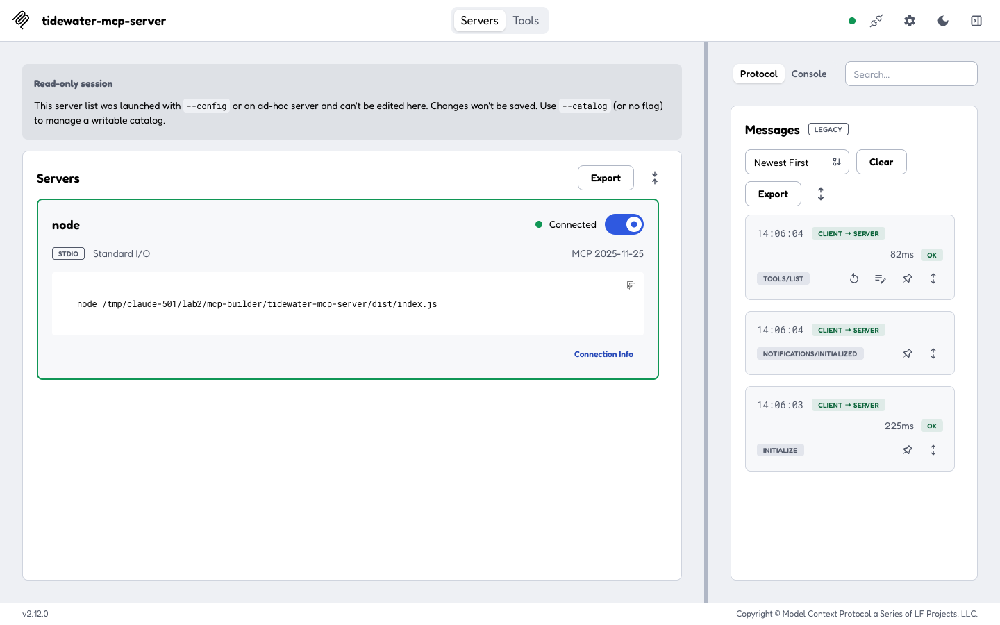
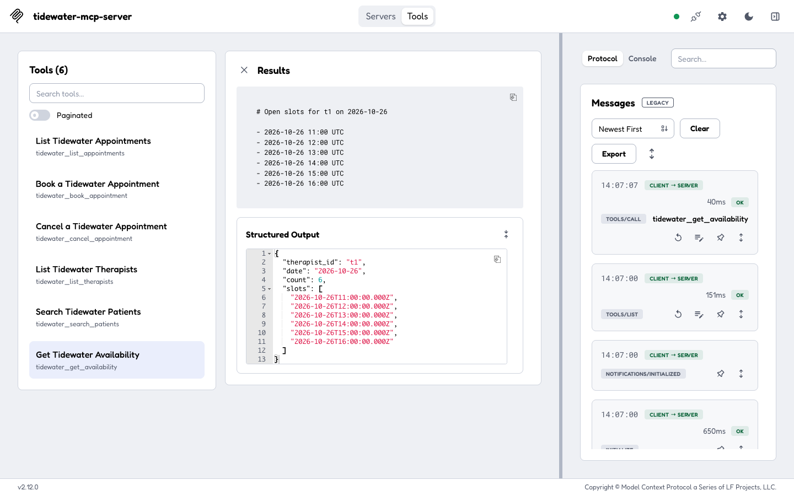

Output


Result
Built tidewater-mcp-server (TypeScript, @modelcontextprotocol/sdk 1.32.1, Zod) from fixtures/mcp/openapi.json following the mcp-builder skill. The API is mocked entirely in memory (src/mockApi.js-style module with seeded therapists, patients and appointments); one tool per OpenAPI operation: tidewater_list_appointments, tidewater_book_appointment, tidewater_cancel_appointment, tidewater_list_therapists, tidewater_search_patients, tidewater_get_availability.
Verified for real: npm run build (tsc) compiles; MCP Inspector CLI lists the 6 tools with annotations and input/output schemas and runs a tools/call; a small SDK client script drove a realistic sequence over stdio (search patient, check availability, book 11:00, availability shrinks, overlapping 11:15 booking rejected with an actionable 409, cancel, JSON + paginated listing, 404, out-of-hours 422, and a Zod protocol error for a bad date); the same server also answered initialize and tools/call over streamable HTTP (stateless JSON, 127.0.0.1:7133) via curl; and the Inspector web UI (v2.12.0) connected, showed the 6 tools and executed tidewater_get_availability with structured output (screenshots).
Skill-driven decisions: server name tidewater-mcp-server and service-prefixed snake_case tool names; descriptions with Args/Returns/Use when/Don't use when; Zod .strict() input schemas with described fields and constraints; outputSchema plus structuredContent on every tool; readOnly/destructive/idempotent/openWorld annotations; response_format markdown|json; limit/offset pagination with has_more/next_offset; 25,000-character truncation guard; errors returned as isError results with next-step hints; stdio for local use and stateless-JSON streamable HTTP bound to 127.0.0.1; no stdout logging. Not done: the skill's Phase 4 (10 evaluation questions run through an LLM with scripts/evaluation.py) - it needs an Anthropic API key and a model run, which was out of scope here.
Notes: each Inspector --cli call starts a fresh server process (state resets), so the multi-step scenario uses the client script. TypeScript 7 does not auto-include @types/node, so tsconfig sets "types": ["node"].
Terminal
# Skill recommends TypeScript + the MCP SDK + Zod.
npm i @modelcontextprotocol/sdk zod && npm i -D typescript @types/node
found 0 vulnerabilities (sdk ^1.32.1, zod ^4.6.7, typescript ^7.0.2)
# First tsc run failed on missing node types (TS 7 no longer auto-includes @types/node); fixed with "types": ["node"].
npm run build
> tsc
(no errors; dist/ has index, tools, schemas, mockApi, format, constants, types)
# Tool list as the Inspector CLI sees it (raw JSON was 591 lines).
npx @modelcontextprotocol/inspector --cli node dist/index.js --method tools/list # summarised
tools/list via inspector --cli -> 6 tools
tidewater_list_appointments ro=True destructive=False idem=True in=['date', 'therapist_id', 'status', 'limit', 'offset', 'response_format'] out=['total', 'count', 'offset', 'appointments', 'has_more', 'next_offset']
tidewater_book_appointment ro=False destructive=False idem=False in=['patient_id', 'therapist_id', 'start', 'duration_min', 'response_format'] out=['appointment']
tidewater_cancel_appointment ro=False destructive=True idem=True in=['appointment_id', 'reason', 'notify_patient', 'response_format'] out=['appointment', 'patientNotified', 'alreadyCancelled']
tidewater_list_therapists ro=True destructive=False idem=True in=['response_format'] out=['count', 'therapists']
tidewater_search_patients ro=True destructive=False idem=True in=['query', 'response_format'] out=['count', 'patients']
tidewater_get_availability ro=True destructive=False idem=True in=['therapist_id', 'date', 'response_format'] out=['therapist_id', 'date', 'count', 'slots']
# One real tool call through the Inspector CLI.
npx @modelcontextprotocol/inspector --cli node dist/index.js --method tools/call --tool-name tidewater_get_availability --tool-arg therapist_id=t1 --tool-arg date=2026-10-26
tidewater-mcp-server running on stdio
{
"content": [
{
"type": "text",
"text": "# Open slots for t1 on 2026-10-26\n\n- 2026-10-26 11:00 UTC\n- 2026-10-26 12:00 UTC\n- 2026-10-26 13:00 UTC\n- 2026-10-26 14:00 UTC\n- 2026-10-26 15:00 UTC\n- 2026-10-26 16:00 UTC"
}
],
"structuredContent": {
"therapist_id": "t1",
"date": "2026-10-26",
"count": 6,
"slots": [
"2026-10-26T11:00:00.000Z",
"2026-10-26T12:00:00.000Z",
"2026-10-26T13:00:00.000Z",
"2026-10-26T14:00:00.000Z",
"2026-10-26T15:00:00.000Z",
"2026-10-26T16:00:00.000Z"
]
}
}
# Booking changes availability, overlap is rejected with guidance, cancel works, bad input is rejected by the Zod schema (-32602). Output after adding outputSchema.
node client.mjs # SDK Client over stdio: full scenario
tidewater-mcp-server running on stdio
tools: tidewater_list_appointments, tidewater_book_appointment, tidewater_cancel_appointment, tidewater_list_therapists, tidewater_search_patients, tidewater_get_availability
>>> tidewater_search_patients {"query":"maya"}
isError=false
# Patients matching 'maya'
- Maya Fernandez (p1) - +1-555-0101
- Maya Chen (p4) - +1-555-0104
structuredContent keys: count, patients
>>> tidewater_get_availability {"therapist_id":"t1","date":"2026-10-26"}
isError=false
# Open slots for t1 on 2026-10-26
- 2026-10-26 11:00 UTC
- 2026-10-26 12:00 UTC
- 2026-10-26 13:00 UTC
- 2026-10-26 14:00 UTC
- 2026-10-26 15:00 UTC
- 2026-10-26 16:00 UTC
structuredContent keys: therapist_id, date, count, slots
>>> tidewater_book_appointment {"patient_id":"p4","therapist_id":"t1","start":"2026-10-26T11:00:00Z"}
isError=false
Booked appointment:
- **a7** 2026-10-26 11:00 UTC (45 min) - Maya Chen (p4) with Dr. Amara Okafor (t1) [booked]
structuredContent keys: appointment
>>> tidewater_get_availability {"therapist_id":"t1","date":"2026-10-26"}
isError=false
# Open slots for t1 on 2026-10-26
- 2026-10-26 12:00 UTC
- 2026-10-26 13:00 UTC
- 2026-10-26 14:00 UTC
- 2026-10-26 15:00 UTC
- 2026-10-26 16:00 UTC
structuredContent keys: therapist_id, date, count, slots
>>> tidewater_book_appointment {"patient_id":"p3","therapist_id":"t1","start":"2026-10-26T11:15:00Z"}
isError=true
Error: Therapist t1 already has appointment a7 at 2026-10-26T11:00:00.000Z. Call tidewater_get_availability to pick a free slot. (HTTP 409)
>>> tidewater_cancel_appointment {"appointment_id":"a7","reason":"Patient travelling","notify_patient":true}
isError=false
Cancelled:
- **a7** 2026-10-26 11:00 UTC (45 min) - Maya Chen (p4) with Dr. Amara Okafor (t1) [cancelled]
- Patient notified: yes
- Reason: Patient travelling
structuredContent keys: appointment, patientNotified, alreadyCancelled
>>> tidewater_list_appointments {"therapist_id":"t1","date":"2026-10-26","response_format":"json","limit":2}
isError=false
{
"total": 3,
"count": 2,
"offset": 0,
"appointments": [
{
"id": "a1",
"patientId": "p1",
"therapistId": "t1",
"start": "2026-10-26T09:00:00.000Z",
"durationMin": 45,
"status": "booked"
},
{
"id": "a2",
"patientId": "p2",
"therapistId": "t1",
"start": "2026-10-26T10:00:00.000Z",
"durationMin": 45,
"status": "booked"
}
],
"has_more": true,
"next_offset": 2
}
structuredContent keys: total, count, offset, appointments, has_more, next_offset
>>> tidewater_list_appointments {"status":"booked","limit":2,"offset":2}
isError=false
# Appointments (2 of 4)
- **a2** 2026-10-26 10:00 UTC (45 min) - Tom Whitfield (p2) with Dr. Amara Okafor (t1) [booked]
- **a4** 2026-10-27 14:00 UTC (45 min) - Maya Chen (p4) with Dr. Lena Brandt (t2) [booked]
structuredContent keys: total, count, offset, appointments, has_more
>>> tidewater_cancel_appointment {"appointment_id":"zzz"}
isError=true
Error: Appointment 'zzz' not found. Use tidewater_list_appointments to find valid IDs. (HTTP 404)
>>> tidewater_book_appointment {"patient_id":"p1","therapist_id":"t1","start":"2026-10-26T20:00:00Z"}
isError=true
Error: The clinic is open 9:00-17:00 UTC. Choose a start/duration that ends by 17:00; tidewater_get_availability lists open slots. (HTTP 422)
>>> tidewater_get_availability {"therapist_id":"t1","date":"26/10/2026"}
isError=true
MCP error -32602: Input validation error: Invalid arguments for tool tidewater_get_availability: Use YYYY-MM-DD, e.g. 2026-10-26 at date
# Stateless JSON streamable HTTP, bound to 127.0.0.1.
TRANSPORT=http PORT=7133 node dist/index.js + curl POST /mcp (initialize, tools/call)
$ curl -s -X POST http://127.0.0.1:7133/mcp -d <initialize> # TRANSPORT=http PORT=7133 node dist/index.js
{"result":{"protocolVersion":"2025-06-18","capabilities":{"tools":{"listChanged":true}},"serverInfo":{"name":"tidewater-mcp-server","version":"1.0.0"}},"jsonrpc":"2.0","id":1}
$ curl -s -X POST http://127.0.0.1:7133/mcp -d <tools/call tidewater_search_patients {"query":"0105"}>
{"count": 1, "patients": [{"id": "p5", "name": "Luis Ortega", "phone": "+1-555-0105"}]}
# Local-only, auth omitted deliberately for a scripted run on loopback.
CLIENT_PORT=7134 SERVER_PORT=7135 DANGEROUSLY_OMIT_AUTH=true npx @modelcontextprotocol/inspector node dist/index.js # then puppeteer-core drives the UI
MCP Inspector Web is up and running at: http://127.0.0.1:7134
(connect -> Tools -> tidewater_get_availability -> t1 / 2026-10-26 -> Execute Tool; see screenshots)
Files
src/index.ts
#!/usr/bin/env node import { McpServer } from class="s">"@modelcontextprotocol/sdk/server/mcp.js"; import { StdioServerTransport } from class="s">"@modelcontextprotocol/sdk/server/stdio.js"; import { StreamableHTTPServerTransport } from class="s">"@modelcontextprotocol/sdk/server/streamableHttp.js"; import { createServer } from class="s">"node:http"; import { SERVER_NAME, SERVER_VERSION } from class="s">"./constants.js"; import { registerTools } from class="s">"./tools.js"; function buildServer(): McpServer { const server = new McpServer({ name: SERVER_NAME, version: SERVER_VERSION }); registerTools(server); return server; } // stdio: local, single client. Never log to stdout - it carries the protocol. async function runStdio(): Promise<void> { await buildServer().connect(new StdioServerTransport()); console.error(class="s">`${SERVER_NAME} running on stdio`); } // Streamable HTTP, stateless JSON: a fresh server + transport per request, bound to 127.0.0.1. async function runHttp(port: number): Promise<void> { const http = createServer(async (req, res) => { if (req.url !== class="s">"/mcp" || req.method !== class="s">"POST") { res.writeHead(404).end(); return; } const chunks: Buffer[] = []; for await (const c of req) chunks.push(c as Buffer); const server = buildServer(); const transport = new StreamableHTTPServerTransport({ sessionIdGenerator: undefined, enableJsonResponse: true }); res.on(class="s">"close", () => { transport.close(); server.close(); }); await server.connect(transport); await transport.handleRequest(req, res, JSON.parse(Buffer.concat(chunks).toString(class="s">"utf8"))); }); http.listen(port, class="s">"127.0.0.1", () => console.error(class="s">`${SERVER_NAME} listening on http://127.0.0.1:${port}/mcp`)); } const mode = process.env.TRANSPORT ?? class="s">"stdio"; if (mode === class="s">"http") runHttp(Number(process.env.PORT ?? 7133)).catch((e) => { console.error(e); process.exit(1); }); else runStdio().catch((e) => { console.error(e); process.exit(1); });
src/tools.ts
import type { McpServer } from class="s">"@modelcontextprotocol/sdk/server/mcp.js"; import * as api from class="s">"./mockApi.js"; import { lookup } from class="s">"./mockApi.js"; import { fmtTime, respond } from class="s">"./format.js"; import { BookAppointmentInput, CancelAppointmentInput, GetAvailabilityInput, ListAppointmentsInput, ListTherapistsInput, SearchPatientsInput, ListAppointmentsOutput, BookAppointmentOutput, CancelAppointmentOutput, ListTherapistsOutput, SearchPatientsOutput, GetAvailabilityOutput } from class="s">"./schemas.js"; import type { Appointment } from class="s">"./types.js"; const label = (a: Appointment) => { const p = lookup.patient(a.patientId)?.name ?? a.patientId; const t = lookup.therapist(a.therapistId)?.name ?? a.therapistId; return class="s">`**${a.id}** ${fmtTime(a.start)} (${a.durationMin} min) - ${p} (${a.patientId}) with ${t} (${a.therapistId}) [${a.status}]`; }; export function registerTools(server: McpServer): void { server.registerTool(class="s">"tidewater_list_appointments", { title: class="s">"List Tidewater Appointments", description: `List appointments, optionally filtered by UTC day, therapist or status, newest-last. Read-only. Does not book or change anything. Args: - date (string, optional): class="s">'YYYY-MM-DD' (UTC) - therapist_id (string, optional): e.g. class="s">'t1' - status (class="s">'booked' | class="s">'cancelled' | class="s">'done', optional) - limit (number, 1-100, default 20), offset (number, default 0) - response_format (class="s">'markdown' | class="s">'json', default class="s">'markdown') Returns (structuredContent): { total, count, offset, appointments: [{ id, patientId, therapistId, start, durationMin, status }], has_more, next_offset? } Use when: class="s">"What is on Dr. Okafor's schedule on Monday?" -> therapist_id=class="s">'t1', date=class="s">'2026-10-26'. Don't use when: you need free slots (use tidewater_get_availability).`, inputSchema: ListAppointmentsInput, outputSchema: ListAppointmentsOutput, annotations: { readOnlyHint: true, destructiveHint: false, idempotentHint: true, openWorldHint: false } }, async (p) => { const res = await api.listAppointments({ date: p.date, therapistId: p.therapist_id, status: p.status }); return respond(res, (all: Appointment[]) => { const page = all.slice(p.offset, p.offset + p.limit); const has_more = all.length > p.offset + page.length; const data = { total: all.length, count: page.length, offset: p.offset, appointments: page, has_more, ...(has_more ? { next_offset: p.offset + page.length } : {}) }; const md = page.length ? class="s">`# Appointments (${page.length} of ${all.length})\n\n${page.map((a) => `- ${label(a)}class="s">`).join("\n")}${has_more ? `\n\nMore available: call again with offset=${p.offset + page.length}.class="s">` : ""}` : class="s">"No appointments match those filters. Try removing the date or status filter."; return { data, markdown: md }; }, p.response_format); }); server.registerTool(class="s">"tidewater_book_appointment", { title: class="s">"Book a Tidewater Appointment", description: `Book a new appointment for a patient with a therapist. Creates a record; it does not notify the patient. Fails with an actionable error if the patient or therapist ID is unknown, the time is outside clinic hours (09:00-17:00 UTC) or the therapist already has an overlapping booked appointment. Args: - patient_id (string), therapist_id (string) - start (string): ISO 8601 date-time, UTC, e.g. class="s">'2026-10-26T11:00:00Z' - duration_min (number, 15-120, default 45) - response_format (class="s">'markdown' | class="s">'json', default class="s">'markdown') Returns (structuredContent): { appointment: { id, patientId, therapistId, start, durationMin, status } } Use when: the user has chosen a patient, therapist and time. Don't use when: you do not know a free slot yet (call tidewater_get_availability first) or to move an existing booking (cancel it, then book).`, inputSchema: BookAppointmentInput, outputSchema: BookAppointmentOutput, annotations: { readOnlyHint: false, destructiveHint: false, idempotentHint: false, openWorldHint: false } }, async (p) => { const res = await api.bookAppointment({ patientId: p.patient_id, therapistId: p.therapist_id, start: p.start, durationMin: p.duration_min }); return respond(res, (a: Appointment) => ({ data: { appointment: a }, markdown: class="s">`Booked appointment:\n\n- ${label(a)}` }), p.response_format); }); server.registerTool(class="s">"tidewater_cancel_appointment", { title: class="s">"Cancel a Tidewater Appointment", description: `Cancel an appointment by ID. Frees the therapistclass="s">'s slot. Cancelling an appointment that is already cancelled succeeds without notifying the patient again; completed ('done') appointments cannot be cancelled. Args: - appointment_id (string): e.g. class="s">'a2' - reason (string, optional, max 500 chars) - notify_patient (boolean, default true) - response_format (class="s">'markdown' | class="s">'json', default class="s">'markdown') Returns (structuredContent): { appointment, patientNotified, alreadyCancelled } Use when: the user explicitly asks to cancel a specific appointment. Don't use when: you only want to look at appointments (tidewater_list_appointments).`, inputSchema: CancelAppointmentInput, outputSchema: CancelAppointmentOutput, annotations: { readOnlyHint: false, destructiveHint: true, idempotentHint: true, openWorldHint: false } }, async (p) => { const res = await api.cancelAppointment(p.appointment_id, { reason: p.reason, notifyPatient: p.notify_patient }); return respond(res, (b: { appointment: Appointment; patientNotified: boolean; alreadyCancelled: boolean }) => ({ data: b, markdown: class="s">`${b.alreadyCancelled ? "Already cancelled (no change)" : "Cancelled"}:\n\n- ${label(b.appointment)}\n- Patient notified: ${b.patientNotified ? "yes" : "no"}${b.appointment.cancelReason ? `\n- Reason: ${b.appointment.cancelReason}class="s">` : ""}` }), p.response_format); }); server.registerTool(class="s">"tidewater_list_therapists", { title: class="s">"List Tidewater Therapists", description: `List every therapist with their ID and specialty. Read-only. Args: - response_format (class="s">'markdown' | class="s">'json', default class="s">'markdown') Returns (structuredContent): { count, therapists: [{ id, name, specialty }] } Use when: you need a therapist_id for another tool.`, inputSchema: ListTherapistsInput, outputSchema: ListTherapistsOutput, annotations: { readOnlyHint: true, destructiveHint: false, idempotentHint: true, openWorldHint: false } }, async (p) => { const res = await api.listTherapists(); return respond(res, (rows) => ({ data: { count: rows.length, therapists: rows }, markdown: class="s">`# Therapists\n\n${rows.map((t: any) => `- ${t.name} (${t.id}) - ${t.specialty}class="s">`).join("\n")}` }), p.response_format); }); server.registerTool(class="s">"tidewater_search_patients", { title: class="s">"Search Tidewater Patients", description: `Search patients by part of their name or phone number (case-insensitive). Read-only. Args: - query (string, 2-100 chars): e.g. class="s">'maya' or class="s">'0104' - response_format (class="s">'markdown' | class="s">'json', default class="s">'markdown') Returns (structuredContent): { count, patients: [{ id, name, phone }] }. Several patients can share a first name - confirm with the phone number before booking. Use when: you have a name or phone and need a patient_id.`, inputSchema: SearchPatientsInput, outputSchema: SearchPatientsOutput, annotations: { readOnlyHint: true, destructiveHint: false, idempotentHint: true, openWorldHint: false } }, async (p) => { const res = await api.searchPatients(p.query); return respond(res, (rows) => ({ data: { count: rows.length, patients: rows }, markdown: rows.length ? class="s">`# Patients matching '${p.query}'\n\n${rows.map((x: any) => `- ${x.name} (${x.id}) - ${x.phone}class="s">`).join("\n")}` : class="s">`No patients match '${p.query}'. Try a shorter part of the name or the last digits of the phone number.` }), p.response_format); }); server.registerTool(class="s">"tidewater_get_availability", { title: class="s">"Get Tidewater Availability", description: `List the open 45-minute slot start times for one therapist on one UTC day (hourly starts 09:00-16:00, minus booked appointments). Read-only. Args: - therapist_id (string): e.g. class="s">'t1' - date (string): class="s">'YYYY-MM-DD' (UTC) - response_format (class="s">'markdown' | class="s">'json', default class="s">'markdown') Returns (structuredContent): { therapist_id, date, count, slots: [ISO start times] } Use when: choosing a time before tidewater_book_appointment.`, inputSchema: GetAvailabilityInput, outputSchema: GetAvailabilityOutput, annotations: { readOnlyHint: true, destructiveHint: false, idempotentHint: true, openWorldHint: false } }, async (p) => { const res = await api.getAvailability(p.therapist_id, p.date); return respond(res, (slots: string[]) => ({ data: { therapist_id: p.therapist_id, date: p.date, count: slots.length, slots }, markdown: slots.length ? class="s">`# Open slots for ${p.therapist_id} on ${p.date}\n\n${slots.map((s) => `- ${fmtTime(s)}class="s">`).join("\n")}` : class="s">`No open slots for ${p.therapist_id} on ${p.date}. Try another date.` }), p.response_format); }); }
src/schemas.ts
import { z } from class="s">"zod"; import { DEFAULT_LIMIT, MAX_LIMIT, ResponseFormat } from class="s">"./constants.js"; const isoDate = z.string().regex(/^\d{4}-\d{2}-\d{2}$/, class="s">"Use YYYY-MM-DD, e.g. 2026-10-26"); const responseFormat = z.nativeEnum(ResponseFormat).default(ResponseFormat.MARKDOWN) .describe(class="s">"'markdown' for human-readable text (default) or 'json' for machine-readable text"); export const ListAppointmentsInput = z.object({ date: isoDate.optional().describe(class="s">"Only appointments starting on this UTC day, e.g. '2026-10-26'"), therapist_id: z.string().min(1).optional().describe(class="s">"Only this therapist's appointments, e.g. 't1' (see tidewater_list_therapists)"), status: z.enum([class="s">"booked", class="s">"cancelled", class="s">"done"]).optional().describe(class="s">"Filter by status"), limit: z.number().int().min(1).max(MAX_LIMIT).default(DEFAULT_LIMIT).describe(class="s">"Max results to return (1-100, default 20)"), offset: z.number().int().min(0).default(0).describe(class="s">"Results to skip for pagination"), response_format: responseFormat }).strict(); export const BookAppointmentInput = z.object({ patient_id: z.string().min(1).describe(class="s">"Patient ID, e.g. 'p1' (find it with tidewater_search_patients)"), therapist_id: z.string().min(1).describe(class="s">"Therapist ID, e.g. 't1' (see tidewater_list_therapists)"), start: z.string().min(10).describe(class="s">"Start as ISO 8601 date-time in UTC, e.g. '2026-10-26T11:00:00Z'"), duration_min: z.number().int().min(15).max(120).default(45).describe(class="s">"Length in minutes (default 45)"), response_format: responseFormat }).strict(); export const CancelAppointmentInput = z.object({ appointment_id: z.string().min(1).describe(class="s">"Appointment ID, e.g. 'a2' (see tidewater_list_appointments)"), reason: z.string().max(500).optional().describe(class="s">"Why it is being cancelled; stored on the appointment"), notify_patient: z.boolean().default(true).describe(class="s">"Send the patient a cancellation notice (default true)"), response_format: responseFormat }).strict(); export const ListTherapistsInput = z.object({ response_format: responseFormat }).strict(); export const SearchPatientsInput = z.object({ query: z.string().min(2).max(100).describe(class="s">"Part of a patient's name or phone number, e.g. 'maya' or '0104'"), response_format: responseFormat }).strict(); export const GetAvailabilityInput = z.object({ therapist_id: z.string().min(1).describe(class="s">"Therapist ID, e.g. 't1'"), date: isoDate.describe(class="s">"UTC day to check, e.g. '2026-10-26'"), response_format: responseFormat }).strict(); // Output schemas: advertised to clients and validated against structuredContent by the SDK. const Appointment = z.object({ id: z.string(), patientId: z.string(), therapistId: z.string(), start: z.string().describe(class="s">"ISO 8601 UTC"), durationMin: z.number().int(), status: z.enum([class="s">"booked", class="s">"cancelled", class="s">"done"]), cancelReason: z.string().optional() }); export const ListAppointmentsOutput = { total: z.number().int(), count: z.number().int(), offset: z.number().int(), appointments: z.array(Appointment), has_more: z.boolean(), next_offset: z.number().int().optional() }; export const BookAppointmentOutput = { appointment: Appointment }; export const CancelAppointmentOutput = { appointment: Appointment, patientNotified: z.boolean(), alreadyCancelled: z.boolean() }; export const ListTherapistsOutput = { count: z.number().int(), therapists: z.array(z.object({ id: z.string(), name: z.string(), specialty: z.string() })) }; export const SearchPatientsOutput = { count: z.number().int(), patients: z.array(z.object({ id: z.string(), name: z.string(), phone: z.string() })) }; export const GetAvailabilityOutput = { therapist_id: z.string(), date: z.string(), count: z.number().int(), slots: z.array(z.string()) };
src/format.ts
import { CHARACTER_LIMIT, ResponseFormat } from class="s">"./constants.js"; import type { ApiResult } from class="s">"./types.js"; export type ToolResponse = { content: { type: class="s">"text"; text: string }[]; structuredContent?: Record<string, unknown>; isError?: boolean; [k: string]: unknown; }; export function errorResponse(message: string): ToolResponse { return { isError: true, content: [{ type: class="s">"text", text: class="s">`Error: ${message}` }] }; } /** Turns an API result into a tool response: structuredContent + text in the requested format. */ export function respond( result: ApiResult<unknown>, build: (body: any) => { data: Record<string, unknown>; markdown: string }, format: ResponseFormat ): ToolResponse { if (!result.ok) return errorResponse(class="s">`${result.error} (HTTP ${result.status})`); const { data, markdown } = build(result.body); let text = format === ResponseFormat.JSON ? JSON.stringify(data, null, 2) : markdown; if (text.length > CHARACTER_LIMIT) { text = text.slice(0, CHARACTER_LIMIT) + class="s">`\n\n[Truncated at ${CHARACTER_LIMIT} characters. Use 'limit'/'offset' or filters to narrow the result.]`; } return { content: [{ type: class="s">"text", text }], structuredContent: data }; } export const fmtTime = (iso: string) => iso.replace(class="s">"T", class="s">" ").replace(/:00\.000Z$/, class="s">" UTC");
src/mockApi.ts
// In-memory stand-in for https://api.tidewater.example/v1 (openapi.json). Every function // maps to one operation in the spec and returns an HTTP-like result, so swapping in a real // fetch-based client later only means replacing this file. import { DAY_END_HOUR, DAY_START_HOUR, DEFAULT_DURATION_MIN } from class="s">"./constants.js"; import type { ApiResult, Appointment, AppointmentStatus, Patient, Therapist } from class="s">"./types.js"; const therapists: Therapist[] = [ { id: class="s">"t1", name: class="s">"Dr. Amara Okafor", specialty: class="s">"Sports rehab" }, { id: class="s">"t2", name: class="s">"Dr. Lena Brandt", specialty: class="s">"Neuro physiotherapy" }, { id: class="s">"t3", name: class="s">"Dr. Joel Sato", specialty: class="s">"Paediatrics" } ]; const patients: Patient[] = [ { id: class="s">"p1", name: class="s">"Maya Fernandez", phone: class="s">"+1-555-0101" }, { id: class="s">"p2", name: class="s">"Tom Whitfield", phone: class="s">"+1-555-0102" }, { id: class="s">"p3", name: class="s">"Priya Nair", phone: class="s">"+1-555-0103" }, { id: class="s">"p4", name: class="s">"Maya Chen", phone: class="s">"+1-555-0104" }, { id: class="s">"p5", name: class="s">"Luis Ortega", phone: class="s">"+1-555-0105" }, { id: class="s">"p6", name: class="s">"Hannah Kowalski", phone: class="s">"+1-555-0106" } ]; const appointments: Appointment[] = [ { id: class="s">"a1", patientId: class="s">"p1", therapistId: class="s">"t1", start: class="s">"2026-10-26T09:00:00.000Z", durationMin: 45, status: class="s">"booked" }, { id: class="s">"a2", patientId: class="s">"p2", therapistId: class="s">"t1", start: class="s">"2026-10-26T10:00:00.000Z", durationMin: 45, status: class="s">"booked" }, { id: class="s">"a3", patientId: class="s">"p3", therapistId: class="s">"t2", start: class="s">"2026-10-26T09:00:00.000Z", durationMin: 60, status: class="s">"booked" }, { id: class="s">"a4", patientId: class="s">"p4", therapistId: class="s">"t2", start: class="s">"2026-10-27T14:00:00.000Z", durationMin: 45, status: class="s">"booked" }, { id: class="s">"a5", patientId: class="s">"p5", therapistId: class="s">"t3", start: class="s">"2026-10-27T11:00:00.000Z", durationMin: 30, status: class="s">"cancelled" }, { id: class="s">"a6", patientId: class="s">"p6", therapistId: class="s">"t1", start: class="s">"2026-10-19T15:00:00.000Z", durationMin: 45, status: class="s">"done" } ]; let nextId = appointments.length + 1; const ok = <T>(body: T, status = 200): ApiResult<T> => ({ ok: true, status, body }); const fail = (status: number, error: string): ApiResult<never> => ({ ok: false, status, error }); const endMs = (a: Pick<Appointment, class="s">"start" | class="s">"durationMin">) => Date.parse(a.start) + a.durationMin * 60_000; const overlaps = (aStart: number, aEnd: number, b: Appointment) => aStart < endMs(b) && Date.parse(b.start) < aEnd; // GET /appointments export async function listAppointments(q: { date?: string; therapistId?: string; status?: AppointmentStatus }) { const rows = appointments .filter((a) => !q.date || a.start.startsWith(q.date)) .filter((a) => !q.therapistId || a.therapistId === q.therapistId) .filter((a) => !q.status || a.status === q.status) .sort((a, b) => a.start.localeCompare(b.start)); return ok(rows); } // POST /appointments export async function bookAppointment(b: { patientId: string; therapistId: string; start: string; durationMin?: number }) { if (!patients.some((p) => p.id === b.patientId)) return fail(404, class="s">`Patient '${b.patientId}' not found. Use tidewater_search_patients to find a valid patient ID.`); if (!therapists.some((t) => t.id === b.therapistId)) return fail(404, class="s">`Therapist '${b.therapistId}' not found. Use tidewater_list_therapists to see valid IDs.`); const startMs = Date.parse(b.start); if (Number.isNaN(startMs)) return fail(400, class="s">`'${b.start}' is not a valid ISO 8601 date-time. Example: 2026-10-26T11:00:00Z.`); const durationMin = b.durationMin ?? DEFAULT_DURATION_MIN; const d = new Date(startMs); const dayStart = Date.UTC(d.getUTCFullYear(), d.getUTCMonth(), d.getUTCDate(), DAY_START_HOUR); const dayEnd = Date.UTC(d.getUTCFullYear(), d.getUTCMonth(), d.getUTCDate(), DAY_END_HOUR); const endAt = startMs + durationMin * 60_000; if (startMs < dayStart || endAt > dayEnd) { return fail(422, class="s">`The clinic is open ${DAY_START_HOUR}:00-${DAY_END_HOUR}:00 UTC. Choose a start/duration that ends by ${DAY_END_HOUR}:00; tidewater_get_availability lists open slots.`); } const clash = appointments.find((a) => a.status === class="s">"booked" && a.therapistId === b.therapistId && overlaps(startMs, endAt, a)); if (clash) return fail(409, class="s">`Therapist ${b.therapistId} already has appointment ${clash.id} at ${clash.start}. Call tidewater_get_availability to pick a free slot.`); const created: Appointment = { id: class="s">`a${nextId++}`, patientId: b.patientId, therapistId: b.therapistId, start: new Date(startMs).toISOString(), durationMin, status: class="s">"booked" }; appointments.push(created); return ok(created, 201); } // POST /appointments/{id}/cancel export async function cancelAppointment(id: string, b: { reason?: string; notifyPatient?: boolean }) { const a = appointments.find((x) => x.id === id); if (!a) return fail(404, class="s">`Appointment '${id}' not found. Use tidewater_list_appointments to find valid IDs.`); if (a.status === class="s">"done") return fail(409, class="s">`Appointment '${id}' is already completed and cannot be cancelled.`); const alreadyCancelled = a.status === class="s">"cancelled"; a.status = class="s">"cancelled"; if (b.reason) a.cancelReason = b.reason; return ok({ appointment: a, patientNotified: !alreadyCancelled && (b.notifyPatient ?? true), alreadyCancelled }); } // GET /therapists export async function listTherapists() { return ok(therapists); } // GET /patients/search export async function searchPatients(q: string) { const needle = q.trim().toLowerCase(); return ok(patients.filter((p) => p.name.toLowerCase().includes(needle) || p.phone.replace(/\D/g, class="s">"").includes(needle.replace(/\D/g, class="s">"") || class="s">"\u0000"))); } // GET /availability export async function getAvailability(therapistId: string, date: string) { if (!therapists.some((t) => t.id === therapistId)) return fail(404, class="s">`Therapist '${therapistId}' not found. Use tidewater_list_therapists to see valid IDs.`); const [y, m, d] = date.split(class="s">"-").map(Number); const slots: string[] = []; for (let h = DAY_START_HOUR; h + 1 <= DAY_END_HOUR; h++) { const s = Date.UTC(y, m - 1, d, h); const e = s + DEFAULT_DURATION_MIN * 60_000; const busy = appointments.some((a) => a.status === class="s">"booked" && a.therapistId === therapistId && overlaps(s, e, a)); if (!busy) slots.push(new Date(s).toISOString()); } return ok(slots); } export const lookup = { therapist: (id: string) => therapists.find((t) => t.id === id), patient: (id: string) => patients.find((p) => p.id === id) };
src/constants.ts
export const SERVER_NAME = class="s">"tidewater-mcp-server"; export const SERVER_VERSION = class="s">"1.0.0"; export const DEFAULT_LIMIT = 20; export const MAX_LIMIT = 100; export const CHARACTER_LIMIT = 25000; export const DEFAULT_DURATION_MIN = 45; export const DAY_START_HOUR = 9; // UTC, mock clinic hours export const DAY_END_HOUR = 17; export enum ResponseFormat { MARKDOWN = class="s">"markdown", JSON = class="s">"json" }
src/types.ts
export type AppointmentStatus = class="s">"booked" | class="s">"cancelled" | class="s">"done"; export interface Therapist { id: string; name: string; specialty: string } export interface Patient { id: string; name: string; phone: string } export interface Appointment { id: string; patientId: string; therapistId: string; start: string; // ISO 8601, UTC durationMin: number; status: AppointmentStatus; cancelReason?: string; } /** Mirrors an HTTP response so tools can treat the mock exactly like the real API. */ export type ApiResult<T> = { ok: true; status: number; body: T } | { ok: false; status: number; error: string };
package.json
{
class="s">"name": class="s">"tidewater-mcp-server",
class="s">"version": class="s">"1.0.0",
class="s">"description": class="s">"MCP server for the Tidewater Appointments API (in-memory mock)",
class="s">"type": class="s">"module",
class="s">"main": class="s">"dist/index.js",
class="s">"bin": {
class="s">"tidewater-mcp-server": class="s">"dist/index.js"
},
class="s">"scripts": {
class="s">"build": class="s">"tsc",
class="s">"start": class="s">"node dist/index.js"
},
class="s">"engines": {
class="s">"node": class="s">">=18"
},
class="s">"dependencies": {
class="s">"@modelcontextprotocol/sdk": class="s">"^1.32.1",
class="s">"zod": class="s">"^4.6.7"
},
class="s">"devDependencies": {
class="s">"@types/node": class="s">"^26.6.5",
class="s">"typescript": class="s">"^7.0.2"
}
}
tsconfig.json
{
class="s">"compilerOptions": {
class="s">"target": class="s">"ES2022", class="s">"module": class="s">"Node16", class="s">"moduleResolution": class="s">"Node16",
class="s">"outDir": class="s">"./dist", class="s">"rootDir": class="s">"./src", class="s">"strict": true,
class="s">"esModuleInterop": true, class="s">"skipLibCheck": true, class="s">"declaration": false, class="s">"types": [class="s">"node"]
},
class="s">"include": [class="s">"src/**/*"]
}